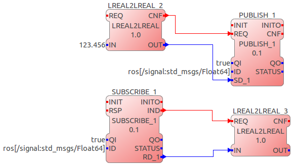
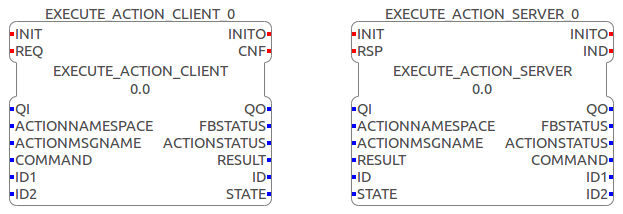

4DIAC supports ROS communication for ROS topics, services and actions. ROS topics have been implemented as a communication layer in FORTE, whereas services and actions require customized ROS function blocks. The implementation was tested with ROS indigo and on Ubuntu 14.04. Other versions (ROS or Ubuntu) might cause problems during the execution of the ROS 4DIAC communication interface. The Example service and action FBs can be used to implement your own IEC 61499 compliant communication FBs for the datatypes you need. The ROS communication layer for topics can easily be extended by adding the IEC61499-ROS mapping of other datatypes.
Prerequisites:
4DIAC implements a Communication Layer for standard ROS topics. Use the PUBLISH_0 / SUBSCRIBE_0 and PUBLISH_1 / SUBSCRIBE_1 function blocks with the following datatypes:
| ROS | IEC61499 |
|---|---|
| std_msgs/Empty | - (empty) |
| std_msgs/Float64 | LREAL |
| std_msgs/Bool | BOOL |
| std_msgs/Int32 | DINT |
| std_msgs/String | STRING |
The ID data input for a communication layer contains the protocol and a string of vendor specific parameters and looks like this:
protocol[parameter]
In our case the protocol string is ros. the parameters in square brackets are a ROS-topic namespace and/or name and its corresponding ROS message type, separated by a colon. In general the ID for a ROS publish or subscribe function block looks like this:
ros[topic_name:message_name]
An example of a ROS publish and subscribe connection within FORTE is shown next.
| Event Name | Description |
|---|---|
| CLIENT | |
| INIT+ | Initialize Client FB |
| INIT- | Terminate Client FB |
| REQ | Send a ROS service request to the connected server |
| CNF | Client FB successfully received a response from the server |
| SERVER | |
| INIT+ | Initialize Server FB |
| INIT- | Terminate Server FB |
| IND | Server FB received a request from the connected client |
| RSP | Send a response to the client (e.g. when the FBN finished processing the request) |
| Data Name | Data Type | Description |
|---|---|---|
| QI | BOOL | Qualifier input |
| NAMESPACE | STRING | Namespace of the service |
| SRVNAME | STRING | Name of the service |
| QO | BOOL | Qualifier output |
| STATUS | STRING | Status of the FB |
| SUCCESS | BOOL | Value related to response.success in std_srvs/Trigger.srv |
| MESSAGE | STRING | Value related to response.message in std_srvs/Trigger.srv |
The ROS action type which is currently supported by 4DIAC is reapp_msgs/Execute.action. Its definition is shown next.
#goal string command int32 id1 int32 id2 --- #result string result int32 id --- #feedback string state
You can install this action on Ubuntu 14.04 running ROS indigo via:
sudo apt-get install ros-indigo-reapp-msgs
The interface of the client and server FBs is shown in the following figure and described in the diagrams below:

| Event Name | Description |
| CLIENT | |
| INIT+ | Initialize Client FB |
| INIT- | Terminate Client FB |
| REQ+ | Send a ROS action goal to the connected server |
| REQ- | Cancel the current ROS action goal to the connected server |
| CNF+ | Client FB received a result from the server |
| CNF- | Client FB received feedback from the server |
| SERVER | |
| INIT+ | Initialize Server FB |
| INIT- | Terminate Server FB |
| IND | Server FB received a goal from the connected client |
| RSP+ | Send the result to the client (e.g. when the FBN finished processing the goal) |
| RSP- | Send feedback to the client (e.g. intermediate results during processing) |
| Data Name | Data Type | Description |
| QI | BOOL | Qualifier input |
| ACTIONNAMESPACE | STRING | Namespace of the action |
| ACTIONMSGNAME | STRING | Name of the action |
| COMMAND | STRING | Value related to goal.command in reapp_msgs/Execute.action |
| ID1 | DINT | Value related to goal.id1 in reapp_msgs/Execute.action |
| ID2 | DINT | Value related to goal.id2 in reapp_msgs/Execute.action |
| QO | BOOL | Qualifier output |
| FBSTATUS | STRING | Status of the FB |
| ACTIONSTATUS | STRING | Status of the action server |
| RESULT | STRING | Value related to result.result in reapp_msgs/Execute.action |
| ID | DINT | Value related to result.id in reapp_msgs/Execute.action |
| STATE | STRING | Value related to feedback.state in std_srvs/Trigger.srv |
ACTIONNAMESPACE=test_execute ACTIONMSGNAME=localisationcan be started like this:
rosrun actionlib axserver.py test_execute/localisation reapp_msgs/ExecuteAction
Go back to Protocols index:
If you want to go back to the Start Here page, we leave you here a fast access
Or Go to top